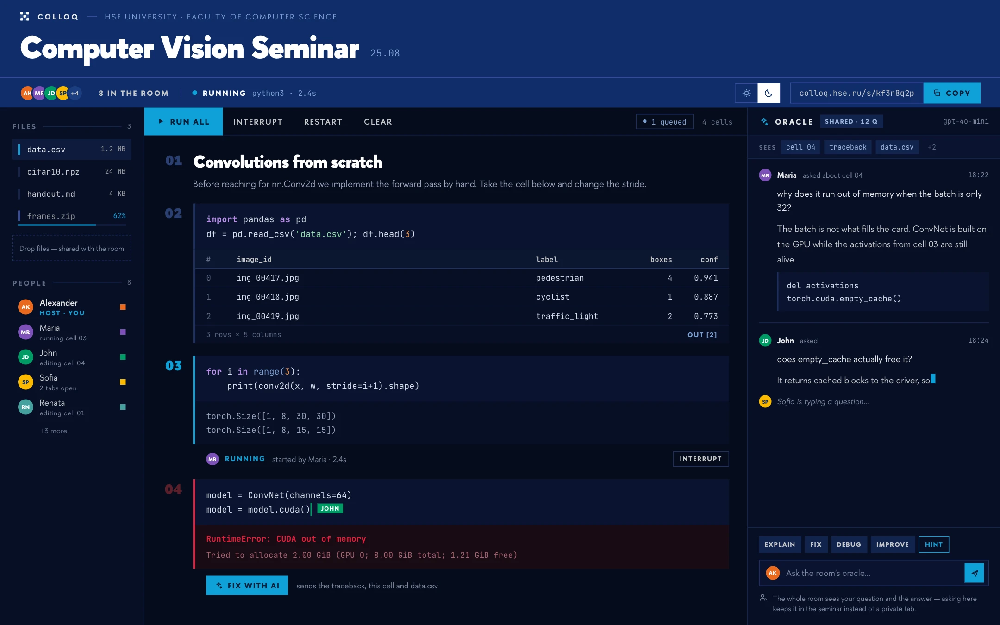

Проектор
Слайд на весь экран в отдельном окне. Можно листать стрелками или презентационным пультом и показывать код из ноутбука во время объяснения.
Для лекций и практических занятий
Общий Python-ноутбук, слайды с рукописными заметками и задания с отдельным ответом для каждого. Студенту нужны только браузер и имя.
Используем на своих занятиях. Готовим открытый выпуск.
01 / Семинар
Открываете ноутбук, и группа работает в нём вместе с вами. Правки и результаты запуска видны всем. Данные, которые вы загрузили в Python, доступны в следующих ячейках — в том числе студентам.

02 / Лекция
Загрузите PDF, откройте проекцию на большом экране и подключите планшет как пульт. Студенты видят слайды и ваши рукописные заметки в своих браузерах.
Проектор
Слайд на весь экран в отдельном окне. Можно листать стрелками или презентационным пультом и показывать код из ноутбука во время объяснения.
Планшет
Перо, маркер, ластик и указка. Добавьте чистый лист для вывода формулы; заметки спикера останутся только у вас.
Студент
Может вернуться к предыдущей странице, дочитать и одним нажатием догнать лекцию. Ноутбук с практикой уже открыт в той же комнате.
Методы оптимизации
wt+1 = wt − η ∇L(wt)
Пульт рассчитан на iPad с Apple Pencil. Поддерживает отсечение ладони и Split View.
03 / Консилиум Новое
Откройте ячейку в режиме «Консилиум». Студенты пишут каждый в своей версии: чужие ответы им не видны, пока вы не выберете один для общего разбора.
Оракул может подготовить сводку и черновики ответов. Вы решаете, что отправить студентам.
В таблице df найдите среднее значение score для каждой
group.
df.groupby("group")["score"].mean()
df["score"].mean()KeyError: 'scores'
Сейчас получилось одно число для всей таблицы. Сгруппируйте строки по
group, а затем посчитайте среднее в каждой группе.
Пример сводки с условными ответами, не живая комната.
Ответы отдельные, Python-ядро общее. Студенты используют подготовленные вами данные. Запуски идут по очереди; изменения общих объектов и файлов могут влиять на следующие решения.
Шаг 01 · Преподаватель
Выберите режим, окружение и правила доступа. Загрузите PDF, начните с пустого ноутбука или импортируйте материалы с GitHub.
Шаг 02 · Студент
Студент вводит имя и выбирает метку. Почта, пароль и установка Python на его компьютере не нужны.
Шаг 03 · Занятие
Показывайте слайды, пишите код вместе или предложите каждому своё решение. После занятия материалы можно перечитать по той же ссылке.
Попробуйте экран входа: введите имя и выберите метку. Это пример на странице — подключение к занятию здесь не происходит.
Ноутбук, файлы, терминал и ИИ-помощник доступны в одной комнате. Кто может ими пользоваться, определяет преподаватель.
Одно ядро
Две ячейки одного документа. Порядок запуска выбираете вы.
Мария, студентка · ячейка 3
df = pd.read_csv("data.csv")
df.shape
Вы · ячейка 4
df["target"].mean()
Интерактивный пример: сначала запустите ячейку Марии, затем свою. Python здесь не выполняется.
Можно редактировать одну ячейку одновременно. Курсоры подписаны именами, правки появляются у всей группы.
Переменная из третьей ячейки доступна в четвёртой независимо от того, кто её запускает. Вывод и очередь запусков общие.
Установили пакет один раз — он доступен группе. Команды выполняются в окружении занятия.
ИИ-помощник отвечает с учётом кода и вывода ячеек. Вопросы и ответы видит вся группа. При создании занятия можно выбрать подсказки или отключить помощника.
Загрузите данные перетаскиванием, разложите файлы по папкам. Они доступны из ноутбука и терминала занятия.
Запускайте Colloq на своём компьютере или сервере. Для разных курсов можно подготовить отдельные окружения с нужными пакетами.
Посмотрите, кто изменил код. Преподаватель может восстановить ячейку или весь ноутбук; Ctrl+Z отменяет собственные правки.
Попросите объяснить ошибку или предложить правку. Изменения кода видны до принятия; их можно отклонить.
Настраивайте, кто редактирует, запускает код и загружает файлы. После завершения занятия студентам остаётся доступ для чтения.
До первой пары
Что общее, что сохраняется и где проходят границы инструмента.
Ноутбук, файлы и ответы оракула доступны по прежней ссылке. Кнопка «Закончить занятие» оставляет студентам чтение, а редактирование и запуски — преподавателю. Занятие можно продолжить; ноутбук можно скачать в формате .ipynb.
Преподаватель может остановить выполнение, восстановить ячейку из истории или ограничить редактирование и запуск. Перезапуск ядра сбросит переменные, но сохранит текст ноутбука и файлы.
Занятие у остальных продолжается. Сохранённые в браузере правки синхронизируются после восстановления связи. По той же ссылке студент может вернуться в комнату.
Студент видит свой ответ, преподаватель — ответы группы. Для обсуждения преподаватель может показать выбранное решение всем. Вычисления проходят в общем ядре: этот режим предназначен для учебного разбора, а не для изолированной проверки экзаменационных работ.
К настроенному вами провайдеру: вопрос, контекст ноутбука и диалога, а также открытого файла. При разборе «Консилиума» — задание и сданные решения; в режиме работы с файлами помощник может читать дополнительные файлы комнаты. Вы выбираете провайдера и задаёте лимиты.
Можно подключить локальную модель через Ollama или vLLM. Без настроенного провайдера занятие работает без оракула.
Да, если сервер доступен группе по сети. Голос и видео остаются в привычном сервисе звонков, а код, слайды и задания открываются в Colloq.
Colloq отвечает за само занятие и его материалы. Расписание, домашние задания, оценки и ведомости остаются в вашей системе управления курсом.
На своей машине
Colloq можно развернуть на ноутбуке преподавателя, кафедральном сервере или VPS. Python работает на этой машине; студенты подключаются из браузера.
Сейчас проект используется на наших занятиях. Публичный репозиторий готовится к открытию под MIT.
Что потребуется
С Docker и ресурсами под задачи курса.
Локальная сеть, свой домен или туннель.
API выбранного провайдера или локальная модель.
Связаться с автором
Напишите, что преподаёте и как устроено занятие. Обсудим, подойдёт ли Colloq вашему курсу и как его попробовать.
Написать Александруsleep3r@icloud.com